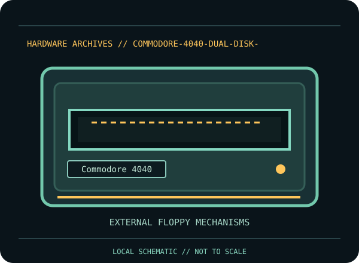

[ INDIVIDUAL COMPONENT // FLOPPY DRIVES ]
Commodore 4040 Dual Disk Drive
This record identifies a documented physical floppy drive, controller, or preservation interface. It separates confirmed model facts from details that vary by suffix, board revision, host, media and configuration.

IDENTIFICATION NOTE: Match the full model/part number, revision, connector and manual before use. Similar family names do not establish interchangeable mechanics or host compatibility.
Model specifications
| Catalog subcategory | External floppy mechanisms |
|---|---|
| Exact model / family | Commodore 4040 |
| Era / product family | Commodore PET/CBM dual-drive peripheral |
| Documented characteristics | Dual external 5.25-inch drive unit. Commodore’s disk reference manual groups the 4040 with its dual-drive disk systems and describes its DOS/drive organization; per-disk usable capacity depends on the documented format and media condition. |
| Interface / connectors | IEEE-488 (parallel CBM/PET bus) host interface. It is not a serial IEC 1541/1571 device and does not connect directly to a PC floppy controller. |
| Host and media compatibility | Designed for the Commodore PET/CBM IEEE-488 host environment. The 4040’s DOS and disk structure are not interchangeable with later 1541-format disks merely because both use 5.25-inch media. Check host command/DOS expectations and the exact disk format before read or write. |
Model-specific compatibility checks
- Identify the complete model/suffix, board revision, serial/date codes and connector arrangement from the physical unit; photograph all labels before installation.
- Designed for the Commodore PET/CBM IEEE-488 host environment. The 4040’s DOS and disk structure are not interchangeable with later 1541-format disks merely because both use 5.25-inch media. Check host command/DOS expectations and the exact disk format before read or write.
- Confirm the host controller, drive wiring, power, drive select, termination, media density and recording format against the cited model documentation. Do not infer a fit or capacity solely from the drive size or connector shape.
Preservation and service notes
Treat the dual mechanisms and drive electronics as a single calibrated system. Record unit/board identifiers, ROM/DOS revision, head condition and alignment state. Use the Commodore disk-reference documentation for model-specific operation; never test with valuable media before confirming both drives and the bus.
Keep original media and raw captures intact. Log the exact drive/controller/software configuration, acquisition date, condition and any service performed; checksum verified copies before creating derivatives.
Manufacturer documentation & sources
- Commodore — Disk Reference Manual (includes 4040)Manufacturer disk-system reference for operation and model distinctions among CBM drive families.
Sources are model-specific manufacturer documentation or archival copies of the original source. Where a document covers a family or multiple revisions, confirm its applicability to the exact unit before using an electrical or service specification.